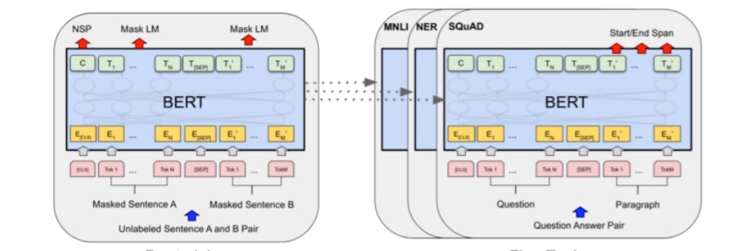
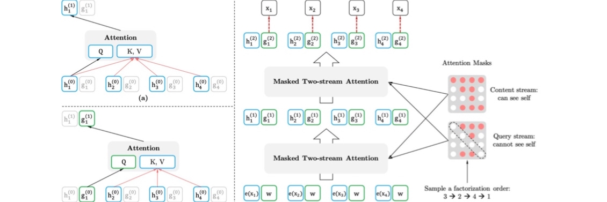
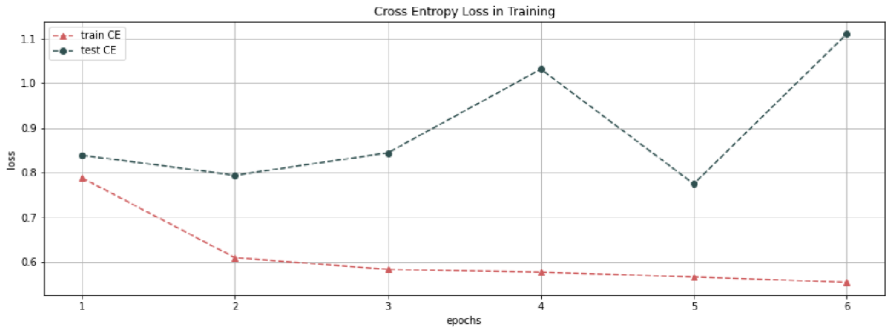
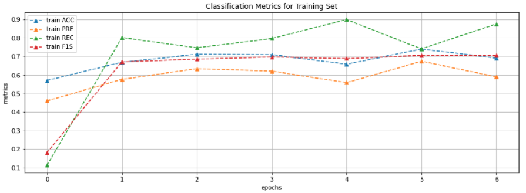
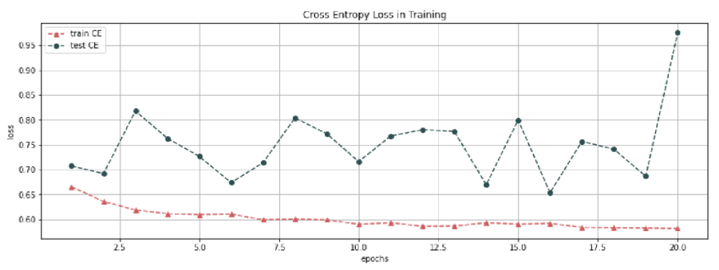
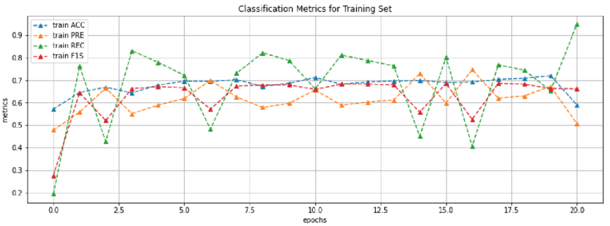

Hate Speech Detection with BERT and XLNet
Platforms prohibit hateful posts, and on Twitter a single anonymous line is enough to cause harm. Two pretrained transformers, a masked language model and a permutation language model, fine-tuned as hate-speech classifiers and compared head to head.
- Transformers · fine-tuning
- Natural Language Processing course
- University of Tehran · 2021
- PyTorch · Hugging Face


Two ways to pretrain a transformer
BERT: masked language modelling
Hide 15% of the tokens and predict them from both sides at once. Bidirectional context makes BERT a strong sentence encoder; for classification, a linear head reads the [CLS] token.
XLNet: permutation language modelling
Predict tokens autoregressively, but over random factorisation orders, so each token learns from context on both sides without the artificial [MASK] token that never appears at fine-tuning time.
Results
BERT vs. XLNet
InteractiveNumbers from the repository's results table.
Both models lean hard toward flagging. Recall on the test split is 0.97 for BERT and 0.84 for XLNet, but precision is below one half: most posts they flag are not hateful. For moderation that can be a defensible operating point (a human reviews what is flagged), but it is not a finished classifier.
XLNet generalises a little better (test accuracy 0.56 vs. 0.48, F1 0.62 vs. 0.61), and both drop sharply from train to test, so the label distribution or vocabulary shifts between splits.
Next steps I would take: tune the decision threshold on a validation split instead of using 0.5, re-weight the classes, and report precision–recall curves rather than a single point.



